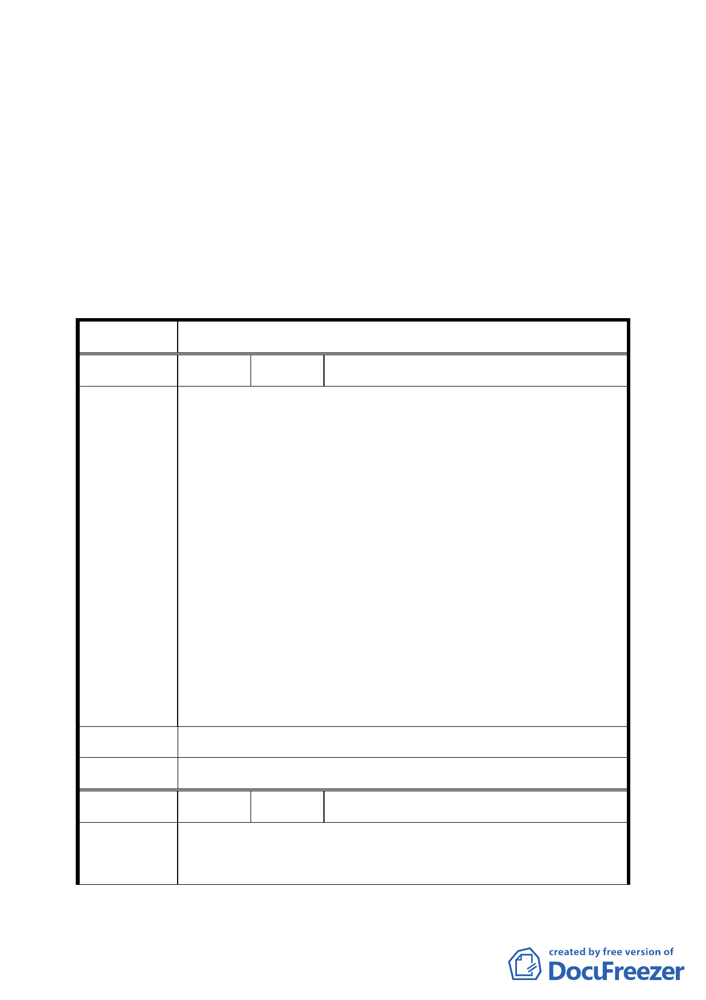

市定古蹟，另公告自 94 年 5 月 25 日零時起實施禁建，禁
建期間自公告實施日起 2 年。
決議：
一、 本案除原屬第二之一種住宅區之土地，其容積率回復為 160
％，以及計畫書第 5 頁圖 2 保存區圖例應再作修正外，其
餘依計畫書內容通過。
二、 公民或團體所提意見審決如後附綜理表。
臺北市都市計畫委員會 公民或團體所提意見綜理表
案名
擬定臺北市士林區「天母白屋」保存區細部計畫案
編號
１ 陳情人 臺灣銀行
本計畫區範圍內土地共 18 筆，面積 4287.5 平方公尺，本行土
地佔 14 筆，面積 4186.5 平方公尺（佔全區 97.65％），又其中
7 筆土地變更前使用分區為住 2（建蔽率 35％、容積率 120％），
面積 1723.03 平方公尺；另 7 筆土地使用分區為住 2-1（建蔽
率 35％、容積率 160％），面積 2463.47 平方公尺。查本都市
陳情理由 計畫變更案擬將全區土地使用分區變更為保存區，建蔽率 35
％、容積率 120％，原住 2-1 之容積率由 160％下降為 120％，
至本行總容積率大幅減少，影響本行權益甚鉅，且與本案計畫
構想（二）「透過容積移轉機制，保存維護計畫區內具有文化
資產價值之建築物，並保障土地所有權人原有權益」之內容不
符。
建議辦法 請依照本案計畫構想（二），保障本行原有容積率。
委員會決議 本案原屬第二之一種住宅區之土地，其容積率回復為 160％。
編號
2 陳情人 田武清
陳情理由
贊成「變更臺北市士林區天母段四小段 348 等 18 筆地號土地
（天母白屋）住宅區為保存區主要計畫案」暨「擬定臺北市士
五